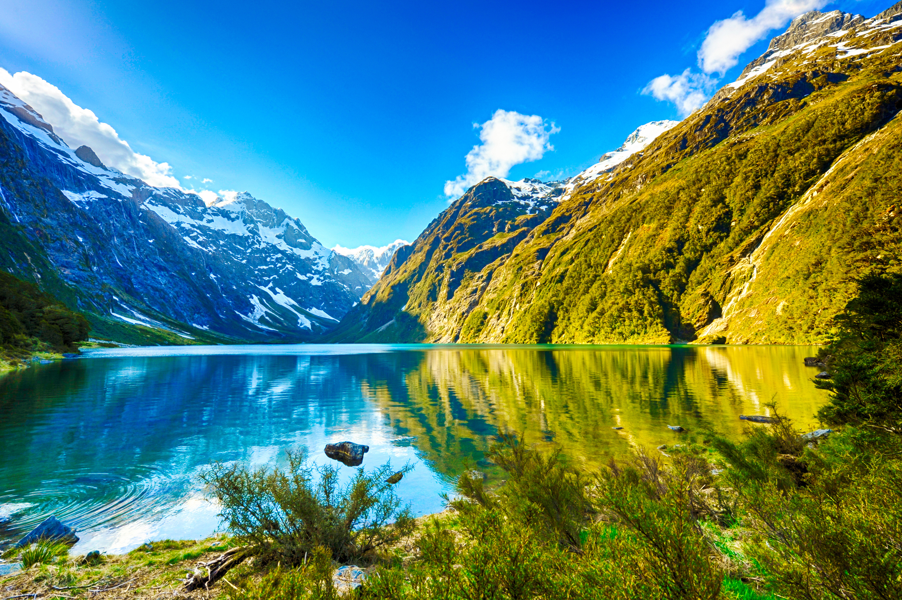

About Us
ECO is a network of 45+ large and small environmental organisations based all around New Zealand.
We strive to empower and inform people to work for better management and protection of New Zealand’s forests, coasts, sea, rivers, land, atmosphere and our unique species.